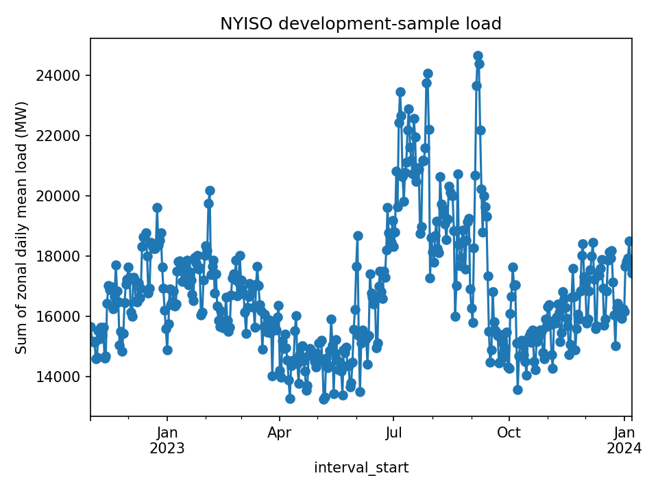
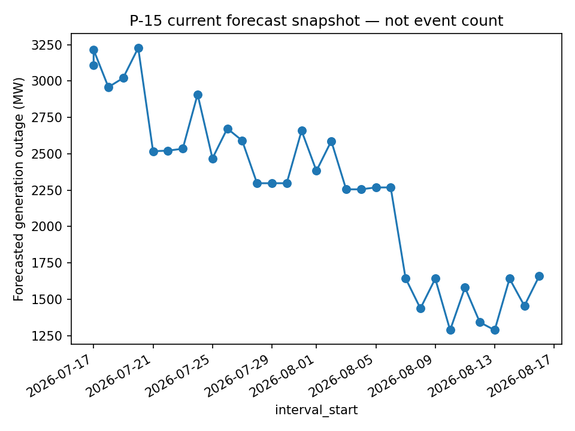

Development configuration: 2022-11-01 through 2024-01-07, timezone America/New_York.
Assess whether a verified non-negative integer count of newly occurring outage events can support an overdispersed count model. The price extension defines DART as RT LBMP minus DA LBMP; it does not treat real-time price as a simple causal driver of outages.
| dataset | source | status | rows | date_min | date_max |
|---|---|---|---|---|---|
| actual_load | NYISO MIS P-58B | READY | 97427 | 2022-11-01 00:00:00 | 2022-11-30 23:55:00 |
| actual_load | NYISO MIS P-58B | READY | 102487 | 2022-12-01 00:00:00 | 2022-12-31 23:55:00 |
| actual_load | NYISO MIS P-58B | READY | 99902 | 2023-01-01 00:00:00 | 2023-01-31 23:55:00 |
| actual_load | NYISO MIS P-58B | READY | 92103 | 2023-02-01 00:00:00 | 2023-02-28 23:55:00 |
| actual_load | NYISO MIS P-58B | READY | 100881 | 2023-03-01 00:00:00 | 2023-03-31 23:55:00 |
| actual_load | NYISO MIS P-58B | READY | 97790 | 2023-04-01 00:00:00 | 2023-04-30 23:55:00 |
| actual_load | NYISO MIS P-58B | READY | 100760 | 2023-05-01 00:00:00 | 2023-05-31 23:55:00 |
| actual_load | NYISO MIS P-58B | READY | 96063 | 2023-06-01 00:00:00 | 2023-06-30 23:55:00 |
| actual_load | NYISO MIS P-58B | READY | 99935 | 2023-07-01 00:00:00 | 2023-07-31 23:55:00 |
| actual_load | NYISO MIS P-58B | READY | 100155 | 2023-08-01 00:00:00 | 2023-08-31 23:55:00 |
| actual_load | NYISO MIS P-58B | READY | 96690 | 2023-09-01 00:00:00 | 2023-09-30 23:55:00 |
| actual_load | NYISO MIS P-58B | READY | 99759 | 2023-10-01 00:00:00 | 2023-10-31 23:55:00 |
| actual_load | NYISO MIS P-58B | READY | 96844 | 2023-11-01 00:00:00 | 2023-11-30 23:55:00 |
| actual_load | NYISO MIS P-58B | READY | 99143 | 2023-12-01 00:00:00 | 2023-12-31 23:55:00 |
| actual_load | NYISO MIS P-58B | READY | 100023 | 2024-01-01 00:00:00 | 2024-01-31 23:55:00 |
| load_forecast | NYISO MIS P-7 | READY | 4326 | 2022-11-01 00:00:00 | 2022-12-05 23:00:00 |
| load_forecast | NYISO MIS P-7 | READY | 4464 | 2022-12-01 00:00:00 | 2023-01-05 23:00:00 |
| load_forecast | NYISO MIS P-7 | READY | 4464 | 2023-01-01 00:00:00 | 2023-02-05 23:00:00 |
| load_forecast | NYISO MIS P-7 | READY | 4032 | 2023-02-01 00:00:00 | 2023-03-05 23:00:00 |
| load_forecast | NYISO MIS P-7 | READY | 4458 | 2023-03-01 00:00:00 | 2023-04-05 23:00:00 |
| load_forecast | NYISO MIS P-7 | READY | 4320 | 2023-04-01 00:00:00 | 2023-05-05 23:00:00 |
| load_forecast | NYISO MIS P-7 | READY | 4464 | 2023-05-01 00:00:00 | 2023-06-05 23:00:00 |
| load_forecast | NYISO MIS P-7 | READY | 4320 | 2023-06-01 00:00:00 | 2023-07-05 23:00:00 |
| load_forecast | NYISO MIS P-7 | READY | 4464 | 2023-07-01 00:00:00 | 2023-08-05 23:00:00 |
| load_forecast | NYISO MIS P-7 | READY | 4464 | 2023-08-01 00:00:00 | 2023-09-05 23:00:00 |
| load_forecast | NYISO MIS P-7 | READY | 4320 | 2023-09-01 00:00:00 | 2023-10-05 23:00:00 |
| load_forecast | NYISO MIS P-7 | READY | 4465 | 2023-10-01 00:00:00 | 2023-11-05 23:00:00 |
| load_forecast | NYISO MIS P-7 | READY | 4325 | 2023-11-01 00:00:00 | 2023-12-05 23:00:00 |
| load_forecast | NYISO MIS P-7 | READY | 4464 | 2023-12-01 00:00:00 | 2024-01-05 23:00:00 |
| load_forecast | NYISO MIS P-7 | READY | 4464 | 2024-01-01 00:00:00 | 2024-02-05 23:00:00 |
| da_lbmp | NYISO MIS P-2A | READY | 10815 | 2022-11-01 00:00:00 | 2022-11-30 23:00:00 |
| da_lbmp | NYISO MIS P-2A | READY | 11160 | 2022-12-01 00:00:00 | 2022-12-31 23:00:00 |
| da_lbmp | NYISO MIS P-2A | READY | 11160 | 2023-01-01 00:00:00 | 2023-01-31 23:00:00 |
| da_lbmp | NYISO MIS P-2A | READY | 10080 | 2023-02-01 00:00:00 | 2023-02-28 23:00:00 |
| da_lbmp | NYISO MIS P-2A | READY | 11145 | 2023-03-01 00:00:00 | 2023-03-31 23:00:00 |
| da_lbmp | NYISO MIS P-2A | READY | 10800 | 2023-04-01 00:00:00 | 2023-04-30 23:00:00 |
| da_lbmp | NYISO MIS P-2A | READY | 11160 | 2023-05-01 00:00:00 | 2023-05-31 23:00:00 |
| da_lbmp | NYISO MIS P-2A | READY | 10800 | 2023-06-01 00:00:00 | 2023-06-30 23:00:00 |
| da_lbmp | NYISO MIS P-2A | READY | 11160 | 2023-07-01 00:00:00 | 2023-07-31 23:00:00 |
| da_lbmp | NYISO MIS P-2A | READY | 11160 | 2023-08-01 00:00:00 | 2023-08-31 23:00:00 |
| da_lbmp | NYISO MIS P-2A | READY | 10800 | 2023-09-01 00:00:00 | 2023-09-30 23:00:00 |
| da_lbmp | NYISO MIS P-2A | READY | 11160 | 2023-10-01 00:00:00 | 2023-10-31 23:00:00 |
| da_lbmp | NYISO MIS P-2A | READY | 10815 | 2023-11-01 00:00:00 | 2023-11-30 23:00:00 |
| da_lbmp | NYISO MIS P-2A | READY | 11160 | 2023-12-01 00:00:00 | 2023-12-31 23:00:00 |
| da_lbmp | NYISO MIS P-2A | READY | 11160 | 2024-01-01 00:00:00 | 2024-01-31 23:00:00 |
| rt_lbmp | NYISO MIS P-24A | READY | 132855 | 2022-11-01 00:05:00 | 2022-12-01 00:00:00 |
| rt_lbmp | NYISO MIS P-24A | READY | 139755 | 2022-12-01 00:05:00 | 2023-01-01 00:00:00 |
| rt_lbmp | NYISO MIS P-24A | READY | 136230 | 2023-01-01 00:05:00 | 2023-02-01 00:00:00 |
| rt_lbmp | NYISO MIS P-24A | READY | 125595 | 2023-02-01 00:05:00 | 2023-03-01 00:00:00 |
| rt_lbmp | NYISO MIS P-24A | READY | 137565 | 2023-03-01 00:05:00 | 2023-04-01 00:00:00 |
| rt_lbmp | NYISO MIS P-24A | READY | 133350 | 2023-04-01 00:03:59 | 2023-05-01 00:00:00 |
| rt_lbmp | NYISO MIS P-24A | READY | 137400 | 2023-05-01 00:05:00 | 2023-06-01 00:00:00 |
| rt_lbmp | NYISO MIS P-24A | READY | 130995 | 2023-06-01 00:05:00 | 2023-07-01 00:00:00 |
| rt_lbmp | NYISO MIS P-24A | READY | 136275 | 2023-07-01 00:05:00 | 2023-08-01 00:00:00 |
| rt_lbmp | NYISO MIS P-24A | READY | 136605 | 2023-08-01 00:05:00 | 2023-09-01 00:00:00 |
| rt_lbmp | NYISO MIS P-24A | READY | 131850 | 2023-09-01 00:05:00 | 2023-10-01 00:00:00 |
| rt_lbmp | NYISO MIS P-24A | READY | 136035 | 2023-10-01 00:05:00 | 2023-11-01 00:00:00 |
| rt_lbmp | NYISO MIS P-24A | READY | 132060 | 2023-11-01 00:05:00 | 2023-12-01 00:00:00 |
| rt_lbmp | NYISO MIS P-24A | READY | 135195 | 2023-12-01 00:02:34 | 2024-01-01 00:00:00 |
| rt_lbmp | NYISO MIS P-24A | READY | 136395 | 2024-01-01 00:05:00 | 2024-02-01 00:00:00 |
| rt_scheduled_transmission_outages | NYISO MIS P-54A | READY | 1777381 | 2022-11-01 00:00:00 | 2022-11-30 23:55:00 |
| rt_scheduled_transmission_outages | NYISO MIS P-54A | READY | 1519419 | 2022-12-01 00:00:00 | 2022-12-31 23:55:00 |
| rt_scheduled_transmission_outages | NYISO MIS P-54A | READY | 1514564 | 2023-01-01 00:00:00 | 2023-01-31 23:55:00 |
| rt_scheduled_transmission_outages | NYISO MIS P-54A | READY | 1343978 | 2023-02-01 00:00:00 | 2023-02-28 23:55:00 |
| rt_scheduled_transmission_outages | NYISO MIS P-54A | READY | 1779687 | 2023-03-01 00:00:00 | 2023-03-31 23:55:00 |
| rt_scheduled_transmission_outages | NYISO MIS P-54A | READY | 1819931 | 2023-04-01 00:00:00 | 2023-04-30 23:55:00 |
| rt_scheduled_transmission_outages | NYISO MIS P-54A | READY | 1756084 | 2023-05-01 00:00:00 | 2023-05-31 23:55:00 |
| rt_scheduled_transmission_outages | NYISO MIS P-54A | READY | 1347885 | 2023-06-01 00:00:00 | 2023-06-30 23:55:00 |
| rt_scheduled_transmission_outages | NYISO MIS P-54A | READY | 1121806 | 2023-07-01 00:00:00 | 2023-07-31 23:55:00 |
| rt_scheduled_transmission_outages | NYISO MIS P-54A | READY | 1215855 | 2023-08-01 00:00:00 | 2023-08-31 23:55:00 |
| rt_scheduled_transmission_outages | NYISO MIS P-54A | READY | 1423581 | 2023-09-01 00:00:00 | 2023-09-30 23:55:00 |
| rt_scheduled_transmission_outages | NYISO MIS P-54A | READY | 1817820 | 2023-10-01 00:00:00 | 2023-10-31 23:55:00 |
| rt_scheduled_transmission_outages | NYISO MIS P-54A | READY | 1701044 | 2023-11-01 00:00:00 | 2023-11-30 23:55:00 |
| rt_scheduled_transmission_outages | NYISO MIS P-54A | READY | 1424157 | 2023-12-01 00:00:00 | 2023-12-31 23:55:00 |
| rt_scheduled_transmission_outages | NYISO MIS P-54A | READY | 1385073 | 2024-01-01 00:00:00 | 2024-01-31 23:55:00 |
| rt_actual_transmission_outages | NYISO MIS P-54B | READY | 1601655 | 2022-11-01 00:02:00 | 2022-11-30 23:57:00 |
| rt_actual_transmission_outages | NYISO MIS P-54B | READY | 1455709 | 2022-12-01 00:02:00 | 2022-12-31 23:57:00 |
| rt_actual_transmission_outages | NYISO MIS P-54B | READY | 1379450 | 2023-01-01 00:07:00 | 2023-01-31 23:57:00 |
| rt_actual_transmission_outages | NYISO MIS P-54B | READY | 1250045 | 2023-02-01 00:02:00 | 2023-02-28 23:57:00 |
| rt_actual_transmission_outages | NYISO MIS P-54B | READY | 1644696 | 2023-03-01 00:02:00 | 2023-03-31 23:57:00 |
| rt_actual_transmission_outages | NYISO MIS P-54B | READY | 1696210 | 2023-04-01 00:02:00 | 2023-04-30 23:57:00 |
| rt_actual_transmission_outages | NYISO MIS P-54B | READY | 1624581 | 2023-05-01 00:02:00 | 2023-05-31 23:57:00 |
| rt_actual_transmission_outages | NYISO MIS P-54B | READY | 1266029 | 2023-06-01 00:02:00 | 2023-06-30 23:57:00 |
| rt_actual_transmission_outages | NYISO MIS P-54B | READY | 1056901 | 2023-07-01 00:02:00 | 2023-07-31 23:57:00 |
| rt_actual_transmission_outages | NYISO MIS P-54B | READY | 1197202 | 2023-08-01 00:02:01 | 2023-08-31 23:57:00 |
| rt_actual_transmission_outages | NYISO MIS P-54B | READY | 1267665 | 2023-09-01 00:02:00 | 2023-09-30 23:57:00 |
| rt_actual_transmission_outages | NYISO MIS P-54B | READY | 1632948 | 2023-10-01 00:02:00 | 2023-10-31 23:57:00 |
| rt_actual_transmission_outages | NYISO MIS P-54B | READY | 1607586 | 2023-11-01 00:02:00 | 2023-11-30 23:57:00 |
| rt_actual_transmission_outages | NYISO MIS P-54B | READY | 1339993 | 2023-12-01 00:02:00 | 2023-12-31 23:57:00 |
| rt_actual_transmission_outages | NYISO MIS P-54B | READY | 1273957 | 2024-01-01 00:02:00 | 2024-01-31 23:57:00 |
| da_scheduled_transmission_outages | NYISO MIS P-54C | READY | 5280 | 2022-11-01 00:00:00 | 2022-11-30 00:00:00 |
| da_scheduled_transmission_outages | NYISO MIS P-54C | READY | 4473 | 2022-12-01 00:00:00 | 2022-12-31 00:00:00 |
| da_scheduled_transmission_outages | NYISO MIS P-54C | READY | 4451 | 2023-01-01 00:00:00 | 2023-01-31 00:00:00 |
| da_scheduled_transmission_outages | NYISO MIS P-54C | READY | 3780 | 2023-02-01 00:00:00 | 2023-02-28 00:00:00 |
| da_scheduled_transmission_outages | NYISO MIS P-54C | READY | 5214 | 2023-03-01 00:00:00 | 2023-03-31 00:00:00 |
| da_scheduled_transmission_outages | NYISO MIS P-54C | READY | 5344 | 2023-04-01 00:00:00 | 2023-04-30 00:00:00 |
| da_scheduled_transmission_outages | NYISO MIS P-54C | READY | 5235 | 2023-05-01 00:00:00 | 2023-05-31 00:00:00 |
| da_scheduled_transmission_outages | NYISO MIS P-54C | READY | 3856 | 2023-06-01 00:00:00 | 2023-06-30 00:00:00 |
| da_scheduled_transmission_outages | NYISO MIS P-54C | READY | 3066 | 2023-07-01 00:00:00 | 2023-07-31 00:00:00 |
| da_scheduled_transmission_outages | NYISO MIS P-54C | READY | 3338 | 2023-08-01 00:00:00 | 2023-08-31 00:00:00 |
| da_scheduled_transmission_outages | NYISO MIS P-54C | READY | 4079 | 2023-09-01 00:00:00 | 2023-09-30 00:00:00 |
| da_scheduled_transmission_outages | NYISO MIS P-54C | READY | 5246 | 2023-10-01 00:00:00 | 2023-10-31 00:00:00 |
| da_scheduled_transmission_outages | NYISO MIS P-54C | READY | 4833 | 2023-11-01 00:00:00 | 2023-11-30 00:00:00 |
| da_scheduled_transmission_outages | NYISO MIS P-54C | READY | 3800 | 2023-12-01 00:00:00 | 2023-12-31 00:00:00 |
| da_scheduled_transmission_outages | NYISO MIS P-54C | READY | 3838 | 2024-01-01 00:00:00 | 2024-01-31 00:00:00 |
| outage_schedules_latest | NYISO MIS P-14B | LATEST_ONLY | 3250 | 2014-06-16 07:00:00 | 2035-12-31 23:59:00 |
| p15_generation_outage_forecast | NYISO MIS P-15 | LATEST_ONLY | 31 | 2026-07-17 00:00:00 | 2026-08-16 00:00:00 |
| weather_albany_dev_sample | Open-Meteo Historical Weather API | READY | 10416 | 2022-11-01 00:00:00 | 2024-01-08 23:00:00 |
| dataset | unique_zones | duplicates | blocker | notes |
|---|---|---|---|---|
| actual_load | 11.0 | 0 | NaN | NaN |
| actual_load | 11.0 | 0 | NaN | NaN |
| actual_load | 11.0 | 0 | NaN | NaN |
| actual_load | 11.0 | 0 | NaN | NaN |
| actual_load | 11.0 | 0 | NaN | NaN |
| actual_load | 11.0 | 0 | NaN | NaN |
| actual_load | 11.0 | 0 | NaN | NaN |
| actual_load | 11.0 | 0 | NaN | NaN |
| actual_load | 11.0 | 0 | NaN | NaN |
| actual_load | 11.0 | 0 | NaN | NaN |
| actual_load | 11.0 | 0 | NaN | NaN |
| actual_load | 11.0 | 0 | NaN | NaN |
| actual_load | 11.0 | 0 | NaN | NaN |
| actual_load | 11.0 | 0 | NaN | NaN |
| actual_load | 11.0 | 0 | NaN | Reused existing raw file; no archive download performed. |
| load_forecast | NaN | 6 | NaN | NaN |
| load_forecast | NaN | 0 | NaN | NaN |
| load_forecast | NaN | 0 | NaN | NaN |
| load_forecast | NaN | 0 | NaN | NaN |
| load_forecast | NaN | 0 | NaN | NaN |
| load_forecast | NaN | 0 | NaN | NaN |
| load_forecast | NaN | 0 | NaN | NaN |
| load_forecast | NaN | 0 | NaN | NaN |
| load_forecast | NaN | 0 | NaN | NaN |
| load_forecast | NaN | 0 | NaN | NaN |
| load_forecast | NaN | 0 | NaN | NaN |
| load_forecast | NaN | 1 | NaN | NaN |
| load_forecast | NaN | 5 | NaN | NaN |
| load_forecast | NaN | 0 | NaN | NaN |
| load_forecast | NaN | 0 | NaN | Reused existing raw file; no archive download performed. |
| da_lbmp | 15.0 | 0 | NaN | NaN |
| da_lbmp | 15.0 | 0 | NaN | NaN |
| da_lbmp | 15.0 | 0 | NaN | NaN |
| da_lbmp | 15.0 | 0 | NaN | NaN |
| da_lbmp | 15.0 | 0 | NaN | NaN |
| da_lbmp | 15.0 | 0 | NaN | NaN |
| da_lbmp | 15.0 | 0 | NaN | NaN |
| da_lbmp | 15.0 | 0 | NaN | NaN |
| da_lbmp | 15.0 | 0 | NaN | NaN |
| da_lbmp | 15.0 | 0 | NaN | NaN |
| da_lbmp | 15.0 | 0 | NaN | NaN |
| da_lbmp | 15.0 | 0 | NaN | NaN |
| da_lbmp | 15.0 | 0 | NaN | NaN |
| da_lbmp | 15.0 | 0 | NaN | NaN |
| da_lbmp | 15.0 | 0 | NaN | Reused existing raw file; no archive download performed. |
| rt_lbmp | 15.0 | 0 | NaN | NaN |
| rt_lbmp | 15.0 | 0 | NaN | NaN |
| rt_lbmp | 15.0 | 0 | NaN | NaN |
| rt_lbmp | 15.0 | 0 | NaN | NaN |
| rt_lbmp | 15.0 | 0 | NaN | NaN |
| rt_lbmp | 15.0 | 0 | NaN | NaN |
| rt_lbmp | 15.0 | 0 | NaN | NaN |
| rt_lbmp | 15.0 | 0 | NaN | NaN |
| rt_lbmp | 15.0 | 0 | NaN | NaN |
| rt_lbmp | 15.0 | 0 | NaN | NaN |
| rt_lbmp | 15.0 | 0 | NaN | NaN |
| rt_lbmp | 15.0 | 0 | NaN | NaN |
| rt_lbmp | 15.0 | 0 | NaN | NaN |
| rt_lbmp | 15.0 | 0 | NaN | NaN |
| rt_lbmp | 15.0 | 0 | NaN | Reused existing raw file; no archive download performed. |
| rt_scheduled_transmission_outages | NaN | 6358 | NaN | NaN |
| rt_scheduled_transmission_outages | NaN | 6874 | NaN | NaN |
| rt_scheduled_transmission_outages | NaN | 3691 | NaN | NaN |
| rt_scheduled_transmission_outages | NaN | 6802 | NaN | NaN |
| rt_scheduled_transmission_outages | NaN | 4878 | NaN | NaN |
| rt_scheduled_transmission_outages | NaN | 6395 | NaN | NaN |
| rt_scheduled_transmission_outages | NaN | 5517 | NaN | NaN |
| rt_scheduled_transmission_outages | NaN | 1604 | NaN | NaN |
| rt_scheduled_transmission_outages | NaN | 1652 | NaN | NaN |
| rt_scheduled_transmission_outages | NaN | 2593 | NaN | NaN |
| rt_scheduled_transmission_outages | NaN | 2345 | NaN | NaN |
| rt_scheduled_transmission_outages | NaN | 3094 | NaN | NaN |
| rt_scheduled_transmission_outages | NaN | 5084 | NaN | NaN |
| rt_scheduled_transmission_outages | NaN | 1123 | NaN | NaN |
| rt_scheduled_transmission_outages | NaN | 2436 | NaN | Reused existing raw file; no archive download performed. |
| rt_actual_transmission_outages | NaN | 13 | NaN | NaN |
| rt_actual_transmission_outages | NaN | 0 | NaN | NaN |
| rt_actual_transmission_outages | NaN | 401 | NaN | NaN |
| rt_actual_transmission_outages | NaN | 0 | NaN | NaN |
| rt_actual_transmission_outages | NaN | 1 | NaN | NaN |
| rt_actual_transmission_outages | NaN | 0 | NaN | NaN |
| rt_actual_transmission_outages | NaN | 0 | NaN | NaN |
| rt_actual_transmission_outages | NaN | 0 | NaN | NaN |
| rt_actual_transmission_outages | NaN | 0 | NaN | NaN |
| rt_actual_transmission_outages | NaN | 0 | NaN | NaN |
| rt_actual_transmission_outages | NaN | 0 | NaN | NaN |
| rt_actual_transmission_outages | NaN | 1 | NaN | NaN |
| rt_actual_transmission_outages | NaN | 0 | NaN | NaN |
| rt_actual_transmission_outages | NaN | 0 | NaN | NaN |
| rt_actual_transmission_outages | NaN | 0 | NaN | Reused existing raw file; no archive download performed. |
| da_scheduled_transmission_outages | NaN | 0 | NaN | NaN |
| da_scheduled_transmission_outages | NaN | 0 | NaN | NaN |
| da_scheduled_transmission_outages | NaN | 0 | NaN | NaN |
| da_scheduled_transmission_outages | NaN | 0 | NaN | NaN |
| da_scheduled_transmission_outages | NaN | 0 | NaN | NaN |
| da_scheduled_transmission_outages | NaN | 0 | NaN | NaN |
| da_scheduled_transmission_outages | NaN | 0 | NaN | NaN |
| da_scheduled_transmission_outages | NaN | 0 | NaN | NaN |
| da_scheduled_transmission_outages | NaN | 0 | NaN | NaN |
| da_scheduled_transmission_outages | NaN | 0 | NaN | NaN |
| da_scheduled_transmission_outages | NaN | 0 | NaN | NaN |
| da_scheduled_transmission_outages | NaN | 0 | NaN | NaN |
| da_scheduled_transmission_outages | NaN | 0 | NaN | NaN |
| da_scheduled_transmission_outages | NaN | 0 | NaN | NaN |
| da_scheduled_transmission_outages | NaN | 0 | NaN | Reused existing raw file; no archive download performed. |
| outage_schedules_latest | NaN | 0 | NaN | Latest-only snapshot; NYISO P-14B index exposes no historical archive, so it does not provide the configured historical window. |
| p15_generation_outage_forecast | NaN | 0 | NaN | Current/future aggregate daily forecast MW snapshot; not outage-event data and not an event count. |
| weather_albany_dev_sample | NaN | 0 | NaN | Single Albany coordinate for development only; timestamps requested in UTC with a one-day end buffer for explicit America/New_York DST conversion and local-date filtering. |
Observed timestamps were localized to America/New_York. Ambiguous and nonexistent naive DST clock times raise errors rather than being guessed.
| table | rows | date_min | date_max | zones | duplicate_count | validation_status |
|---|---|---|---|---|---|---|
| actual_load | 1479962.0 | 2022-11-01 00:00:00-04:00 | 2024-01-31 23:55:00-05:00 | 11.0 | 0.0 | PASS |
| load_forecast | 736200.0 | 2022-11-01 00:00:00-04:00 | 2024-01-05 23:00:00-05:00 | 12.0 | 0.0 | PASS |
| da_lbmp | 164535.0 | 2022-11-01 00:00:00-04:00 | 2024-01-31 23:00:00-05:00 | 15.0 | 0.0 | PASS |
| rt_lbmp | 2018160.0 | 2022-11-01 00:05:00-04:00 | 2024-02-01 00:00:00-05:00 | 15.0 | 0.0 | PASS |
| weather_albany | 10416.0 | 2022-10-31 20:00:00-04:00 | 2024-01-08 18:00:00-05:00 | NaN | 0.0 | PASS |
| p15_generation_outage_forecast | 62.0 | 2026-07-17 00:00:00-04:00 | 2026-08-16 00:00:00-04:00 | NaN | 0.0 | PASS |
| outage_schedules_latest | 3250.0 | NaN | NaN | 0.0 | 0.0 | PASS |
| p54a_scheduled_snapshots | NaN | NaN | NaN | NaN | NaN | SKIPPED |
| p54b_actual_snapshots | NaN | NaN | NaN | NaN | NaN | SKIPPED |
| p54c_scheduled_snapshots | NaN | NaN | NaN | NaN | NaN | SKIPPED |
| panel | rows | date_min | date_max | grain | zones | merge_match_rate | target_status |
|---|---|---|---|---|---|---|---|
| daily_analysis_panel | 4763 | 2022-11-01 00:00:00-04:00 | 2024-01-07 00:00:00-05:00 | zone-local_day | 11 | 0.993072 | BLOCKED |
| hourly_price_panel | 114323 | 2022-11-01 00:00:00-04:00 | 2024-01-07 23:00:00-05:00 | zone-hour | 11 | 1.000000 | PRICE_EXTENSION_ONLY |
BLOCKED. P-15 is forecasted generation outage MW, not event count. P-14B is latest-only and lacks zone; inspected P-54 snapshots do not provide stable event identity plus complete timing. A verified historical new-outage count cannot currently be constructed.
| status | target | observations | mean | variance | variance_to_mean | zero_share | target_validity | main_limitations |
|---|---|---|---|---|---|---|---|---|
| BLOCKED | new_outage_count | NaN | NaN | NaN | NaN | NaN | not available | P-14B is latest-only and lacks zone; P-54 snapshots lack stable event identity and complete event timing. P-15 is MW, not count. |


NOT AVAILABLE. Mean, variance, variance-to-mean ratio, and zero share require a valid outage count target. No substitute target was used.
| model_status | reason |
|---|---|
| BLOCKED | No verified historical outage event count. P-15 MW is not a count. |
IRR would be interpreted as exp(beta), the multiplicative change in expected count per one-unit covariate increase, conditional on the model. No IRRs are reported because the count model is blocked.
Seek a versioned event-level outage source with stable event ID, start time, forced/scheduled definition, affected MW, and effective facility-to-zone mapping. Until then, retain the valid load, price, weather, and outage-MW pipelines while keeping the primary count-model branch blocked.